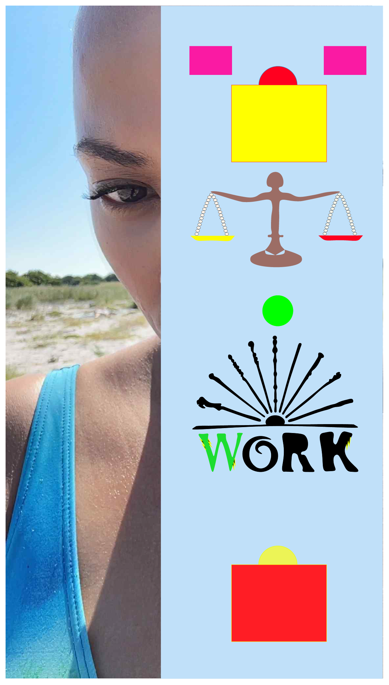

Om mig
Kompentancer:
-
Tema 2 - Grundlæggende Web
Jeg har arbejdet med de grundlæggende metoder og teorier til HTML og CSS grundlæggende kendskab til HTML og CSS, som skal give mig kompentancer i at udvikle et website til brugerens behov. -
Tema 3 - Grundlæggende UI/UX
Jeg har arbejdet med brugervenlighed og guideing til at skabe et brugerforståelse og brugeroplevelse. Brug af gestaltlovene. -
Tema 4 - Grundlæggende animation
Jeg har arbejdet med grundlæggende metoder og værktøjer til JavaScript til at lave simple animationer og udvikle et spil. -
Tema 5 - Grundlæggende indhold
Jeg har arbejdet med at tænke analytisk omkring løsninger der kan opfylde brugerens behov og opgavens mål.
